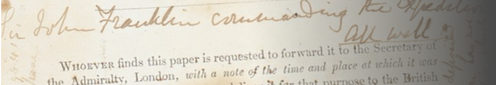

Life remains.... for now...
With hands blue from the cold, and ink made liquid only by burning some precious whale oil, Captain James Fitzjames did his best. He scrawled in the margins.
'H.M. Ships Terror and Erebus were deserted on the 22nd April, 5 leagues NNW of this, having been beset since 12 Septr. 1846. Sir John Franklin died on the 11th June 1847 and the total loss by deaths in the Expedition has been to this date 9 Officers and 15 Men'.
The paper, printed in several languages, enjoined the reader: 'Whoever finds this paper is requested to forward it to the Secretary of the Admiralty...'
'God damn it Franklin,' swore Fitzjames as he looked at the remaining crew.
The First Mate caught his eye. It was time to go. Fitzjames jammed the paper under the pile of rocks, stood, and together the crew began to walk. To where? God only knows. 105 men, dragging sledges, over the April ice. In the distance, someone watched them go.
You are Captain James Fitzjames from the doomed Franklin Expedition, navigating the hostile Arctic as isolation, dwindling resources, and moral dilemmas weigh upon you. Guide your crew to salvation or to their doom; and either way, write it all down so someone knows what men you were.
You are Wretched and Alone.
Keep your log safe. It will vindicate your name.
'Whoever Finds This Paper' is a solo role-playing game. You take on the role of James Fitzjames, one of the officers on Franklin's ill-fated expedition searching for the North West Passage.
You use cards and dice to generate prompts that describe the events you are reacting to, the situations you are in. You chronicle your response; your responses influence what happens at the next die roll, the next pull of the cards.
How would Fitzjames react?
How will you react?
Provisions
You can play this game in the browser; but if you choose to play it with pen and paper, you can print out all of the rules and information from this pdf.
For pen and paper play, you will need:
- Standard Deck of Cards: Each suit and value drives the narrative with specific challenges and reflections.
- Jenga Block Tower: Represents your psychological stability and the crew's cohesion.
- Tokens: Start with 30 tokens representing food reserves. These can be replenished or diminished through gameplay.
- Dice: Two standard dice. Used to navigate interaction potential with the Inuit, influencing Fitzjames's internal and external conflict.
- A notebook to write in
- Suitable music
Your First Entry
Begin by chronicling that day on the ice, that day when you neatly folded the paper and hid it in the cairn. Franklin is already dead. What lies ahead of you? You will find out.
Shuffle the deck and erect the tower. Roll a d6 and pull that many cards; these are the things that have happened that day. Follow directions on the cards, and write your log as best you can.
Many cards will require you to roll dice to determine their outcomes. Use the separate dice rolling section to roll 1d6 for general events or 2d6 for Inuit encounters.
And then put one foot in front of the other, and roll the dice again, for another day, there on the ice.
If the tower falls, you have collapsed into insanity and death swiftly follows. If you run out of food, well, how many men do you have left...?
Events
♠️ Spades: The Unforgiving North
There will be storms, frostbite, and ice entrapment. There could be bears.
♥️ Hearts: Crew Morale
We are the only men for hundreds and hundreds of miles. Aren't we?
♦️ Diamonds: Provisions and Supplies
There's only so much we can carry, that we can drag, over the ice.
♣️ Clubs: Mental Strain and Exhaustion
A British Officer always knows what to do, a British Officer never falters.
Interpreting Results
Certain card draws might trigger a die or dice roll. When rolling, consider the context of the interaction or observation being made.
The roll result should lead to immediate in-game consequences and influence the narrative, either stabilizing your mental state or exacerbating fears and tensions.
Roll 1-3:
The outcome skews from less to a more negative, distrustful or fearful interpretation, reflective of the crew's heightened paranoia and cultural biases. This symbolizes a regression or negative response.
Roll 4-6:
The outcome skews from less to a more positive, insightful or accepting interpretation. This outcome represents hope, progress or enlightenment.
If rolling because of an Encounter with the Inuit: Roll 2 dice
- 1-5: The Inuit presence feels threatening, amplifying the descent into madness. Pull two blocks.
- 6-9: A neutral encounter. Potential for reflection; no immediate effect but the prospect to address lingering dread in the journal entries.
- 10-12: Recognize moments of clarity. Successful observation of Inuit humanity and adaptability grants two tokens.
The Ending of Things
If the tower falls, you have descended into madness and perish on the ice, in the tundra, even though help may have been there to hand.
Running out of tokens doesn't necessarily mean starvation... yet. For every two turns without a token in your possession, pull a block. But if you eat nothing for more than seven turns, well...
Pulling all four queens and having replenished supplies through consistent good relations with the Inuit (four or more 10+ rolls):
You are sustained, in this vast wilderness, and though members of your crew have perished, you reach the Hudson's Bay Company outpost. When you eventually reach London, you are held in contempt for adapting to 'native' ways. Your log is held as evidence for your eventual court martial.
The Final Push:
Is that... is that a ship in the distance? Can you reach it? If you can reach it in three more turns without dying / descending into madness - you must pull a block from the tower each turn, regardless of what a card says - you are saved by a simple whaling ship that returns you to Newfoundland, and eventually, to London. If the tower falls, you perish within site of salvation. But if not...
Burn the pages of your diary/log that you cannot afford for anyone to see.
You know which ones.
Afterword
I am fascinated by the possibility space that solo journaling RPGs may offer historical- and archaeo- gaming.
In this present effort - my first - I am playing with the 'what if' of the Franklin expedition. I want the player to experience the disorientation of the North, but also, offer salvation to these doomed men. But is it a salvation that a 19th century British Officer would have recognized? The Franklin Expedition lived on in Inuit oral history for generations; it is harrowing reading.
I also come to this from a background in simulation. Don't like the rules? Feel the balance is off? Feel free to make your own, but try to ground them in the historical/cultural realities of the scenario. Play through, then think with. We write to find out what we know; solo journaling rpg offer a powerful way, I think, of plumbing our own knowledge.
Shawn Graham CC-BY 2024
This work is based on The Wretched (found at http://loottheroom.itch.io/wretched), product of Chris Bissette and Loot The Room, and licensed for our use under the Creative Commons Attribution 3.0 Unported license (http://creativecommons.org/licenses/by/3.0/).